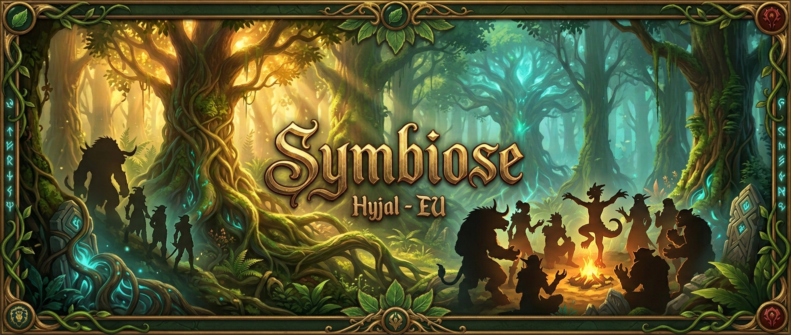
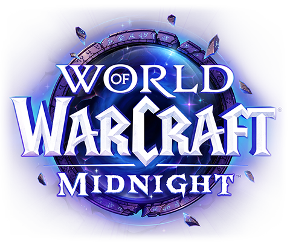

Une guilde solide
Quinze ans d’existence et pas de disband sur un coup de tête. Ici, on se serre les coudes face aux difficultés, dans le respect et la tolérance.


Charte de guilde · À lire
Quinze ans que Symbîose existe, et on est toujours là - c’est déjà une belle preuve qu’on fait quelque chose de bien, non ?
Notre guilde, c’est une bande de joueurs qui se connaissent, se respectent et partagent une même envie : relever de vrais défis sans que le jeu devienne un deuxième boulot. Deux soirées de raid par semaine, avec un objectif clair : clean le HM à chaque tier et au moins la moitié du MM, ensemble et proprement.
La vie réelle passe avant Azeroth. Que tu puisses raider chaque semaine ou non, tu es le ou la bienvenu(e) ici en tant que personne, pas juste comme un slot sur un roster.
Notre identité
Quinze ans d’existence et pas de disband sur un coup de tête. Ici, on se serre les coudes face aux difficultés, dans le respect et la tolérance.
Un Discord structuré avec stratégies, ressources, événements Mythique+ et hauts faits, ainsi que des officiers actifs au quotidien.
Dans les périodes creuses sur WoW, on joue à d’autres jeux ensemble. La communauté ne s’arrête pas à Azeroth.
Tu souhaites nous rejoindre sans engagement ? Ouvre un courrier de guilde et présente-toi.
Pour rejoindre le roster, poursuis avec l’encart ci-dessous.
Candidature
Notre roster est ouvert aux joueurs motivés, investis et désireux de s’impliquer durablement dans la vie de la guilde ainsi que dans notre progression en raid Mythique.
Nos besoins sont régulièrement mis à jour sur la page Raider.IO de Symbîose.
Organisation humaine
Raid Leader :
Plumette
Suppléants RL :
Miathilda (Hajin)
Hornyhors (Kalegloss)
Cadre de jeu
Les inscriptions aux raids se font directement sur Discord via le canal #calendrier.
La clôture des inscriptions est fixée à la veille du raid à 14 h. Passé ce délai, il ne sera plus possible de rejoindre le raid afin de permettre aux officiers de préparer le roster dans de bonnes conditions.
Tu confirmes ta disponibilité du début à la fin du raid. Tu t’engages à rester jusqu’au dernier pull, à 23 h.
Ta disponibilité est incertaine. Sans confirmation avant la clôture, tu seras considéré(e) comme absent(e) pour l’organisation du roster.
Signale simplement ton absence dans #absences. Aucune justification publique n’est nécessaire.
Nous raidons deux soirs par semaine : mercredi et jeudi.
Nous ne raidons que deux soirs par semaine, pendant environ deux heures. C’est peu, et c’est justement pour cela que la régularité de chacun est essentielle au bon fonctionnement du roster.
Nous savons que la vie réelle peut modifier les disponibilités. Ce système n’a pas pour objectif de sanctionner, mais de permettre une organisation juste et transparente pour tout le groupe.
Chaque Symbiote du roster doit maintenir un minimum de 85 % de présence. Sous ce seuil, le joueur entre en période probatoire.
Le joueur reste membre actif et peut continuer à raider. Il dispose de huit raids consécutifs pour repasser au-dessus de 85 % et retrouver pleinement son statut de Symbiote.
Si le seuil n’est pas atteint après ces huit raids, le joueur redevient Membre. Son intégration dans la guilde n’est pas remise en question : seule sa place dans le roster fixe est libérée. Un retour pourra être envisagé si ses disponibilités évoluent, à l’appréciation des officiers.
Le suivi est assuré via RaidHelper et une application dédiée développée spécifiquement par Nunah - merci pour ça ! 🫶
😌 Les joueurs remplaçants sont automatiquement exclus de ce système, car ils n’ont pas d’obligation de présence.
En raid
Ces engagements lient chaque raider au reste du groupe. Un oubli peut arriver ; s’il devient une habitude, l’accès au raid pourra être refusé. On compte sur toi ! 💪
Équipement
Les loots sont gérés via l’add-on RCLootCouncil, dont l’installation est obligatoire avant le raid. Les officiers attribuent les objets selon la performance, la régularité et l’intérêt collectif.
Une liste BiS pourra t’être demandée afin d’aider le Master Looter à attribuer les objets au mieux. Prépare-la à l’avance.
L’objectif est que tout le monde reparte avec quelque chose. Une rotation est assurée sur deux à trois semaines : il n’est pas possible de prendre un BiS deux fois de suite si un autre joueur n’a rien reçu depuis deux raids. 🤝
Pré-requis techniques
Outil de préparation et d’exécution des plans de raid.
Guide Discord CurseForgeObligatoire pour la distribution des loots.
Une fois les raids de la semaine terminés - et uniquement dans ce cas - tu es libre de te tag en pick-up. C’est même encouragé pour l’expérience et les loots. Reste attentif à un éventuel décalage ponctuel d’un soir de raid.
Si tu es absent(e) à un raid prévu, ne te tag pas en pick-up sans en parler à un officier. Le but est d’éviter de bloquer ta participation au raid suivant.
En raid Mythique, un seul boss fait en pick-up peut te verrouiller pour toute la semaine avec un autre groupe. Demande toujours validation avant de te tag.
Pour monter un groupe raid, propose en priorité aux membres de la guilde avant d’ouvrir en pick-up.
Accompagnement
Chaque joueur du roster est rattaché à un officier référent, appelé Gardien.
Résumé essentiel
L’objectif n’est pas d’ajouter des contraintes inutiles, mais de garantir une progression efficace et agréable pour tous.
On ne raid que deux soirs par semaine, donc chaque absence compte. Sois ponctuel, préviens dès que possible et, en cas de démotivation, viens en parler à un officier au lieu de disparaître.
Les stratégies et Raid Plans sont fournis à l’avance : ils doivent être consultés avant le raid.
Gemmes, enchantements, talents et consommables doivent être prêts avant le pull. C’est la base pour respecter le temps du groupe.
Maîtrise tes cycles, tes CD et tes utilitaires. Tiens-toi à jour grâce aux logs, simulations et ressources de theorycraft. La perfection n’est pas exigée, le travail et la progression le sont.
Pas d’AFK inutile : reste focus pendant les pulls pour maintenir un rythme propre et efficace.
Les remarques servent à faire progresser le groupe, pas à juger les personnes.
Des calls utiles, pas de flood. La priorité de parole revient au Raid Leader.
Le raid seul ne suffit pas : Mythique+, optimisation, préparation et contribution de guilde font partie du rôle de raider.
On ne joue pas pour parser, on joue pour tomber des boss. Le groupe passe avant la performance ou l’intérêt individuel. Seul on va plus vite ; ensemble, on va plus loin.
Respecte les membres, l’organisation et les décisions prises. Représente correctement la guilde et contribue à préserver un environnement sain et agréable.
Donjons
Le but est simple : qu’on ait une meilleure expérience qu’en pick-up, pas l’inverse.
Si tu viens avec un reroll ou un personnage peu optimisé, annonce-le clairement avant la clé.
Tu es libre de refuser une clé si la composition ou le niveau ne te semble pas adapté. Personne n’est forcé de s’engager dans une clé avec des personnages non préparés ou des objectifs incompatibles.
Si tu t’inscris en clé élevée, tu es préparé(e), tu connais les stratégies, tu as tes consommables et tu joues sérieusement.
Si tu ne maîtrises pas un donjon ou une mécanique, dis-le avant le départ. C’est toujours mieux que de le découvrir en run.
On ne tag pas en mode « on verra bien » ou « on va me carry ». Si tu n’es pas prêt, privilégie des clés plus basses pour t’entraîner.
On évite de monter des groupes voués à l’échec. L’objectif reste de progresser, pas de perdre le temps de chacun.
On favorise des compositions cohérentes pour push plutôt que des runs bancals qui pénalisent tout le monde.
Si tu push avec ton main, pense aussi à aider la guilde lorsque c’est possible afin de tirer tout le monde vers le haut.
Une clé est un engagement. Évite tout comportement qui pénalise le groupe par manque de préparation ou de sérieux.
Tu as du mal à être pris(e) en groupe ? Monte tes propres clés. C’est l’un des meilleurs moyens de progresser et d’aider d’autres membres.
N’hésite pas à faire des demandes en jeu ou sur Discord pour trouver des partenaires de farm, de coffre ou de push. Favorisons les groupes entre guildmates plutôt que de jouer chacun de son côté.
Le niveau de la clé détermine le niveau d’objet obtenu en fin de donjon et dans la Grande chambre forte hebdomadaire.
| Clé | Fin de donjon | Voie | Grande chambre forte | Voie |
|---|---|---|---|---|
| +2 | 295 | Champion 2/6 | 305 | Héros 1/6 |
| +3 | 295 | Champion 2/6 | 305 | Héros 1/6 |
| +4 | 298 | Champion 3/6 | 308 | Héros 2/6 |
| +5 | 302 | Champion 4/6 | 308 | Héros 2/6 |
| +6 | 305 | Héros 1/6 | 311 | Héros 3/6 |
| +7 | 305 | Héros 1/6 | 315 | Héros 4/6 |
| +8 | 308 | Héros 2/6 | 315 | Héros 4/6 |
| +9 | 308 | Héros 2/6 | 315 | Héros 4/6 |
| +10 | 311 | Héros 3/6 | 318 | Mythe 1/6 |
| +11 | 311 | Héros 3/6 | 318 | Mythe 1/6 |
| +12 et + | 311 | Héros 3/6 | 318 | Mythe 1/6 |
Une question ?
Un système de tickets est disponible sur Discord pour toute question, suggestion ou candidature.
Ouvrir un ticket Discord